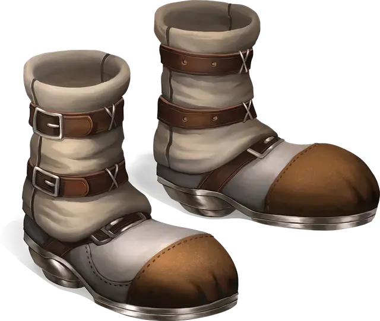

Сапоги ходьбы и прыжков
Boots of Striding and Springing
Чудесный предмет, необычный (требуется настройка)

Рекомендованная стоимость 400 зм
Пока вы носите эти сапоги, ваша Скорость становится равна 30 футов, если только она не больше, и ваша Скорость не уменьшается из-за превышения вами грузоподъемности или ношения Тяжёлых доспехов.
Один раз в каждый ваш ход вы можете прыгнуть на расстояние до 30 футов, потратив всего 10 футов передвижения.